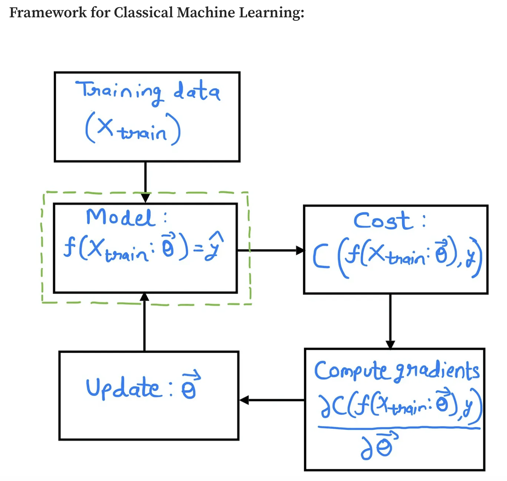
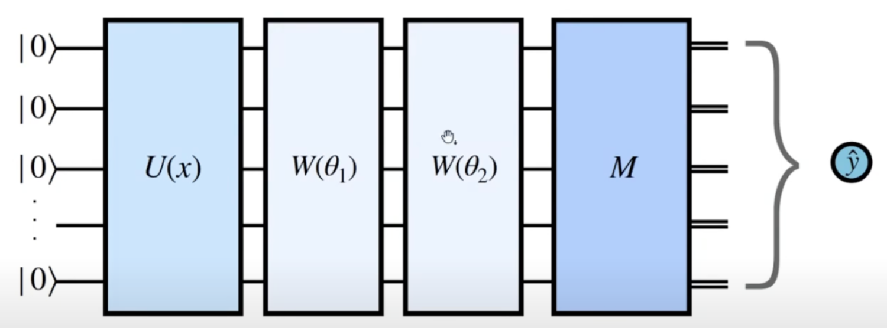
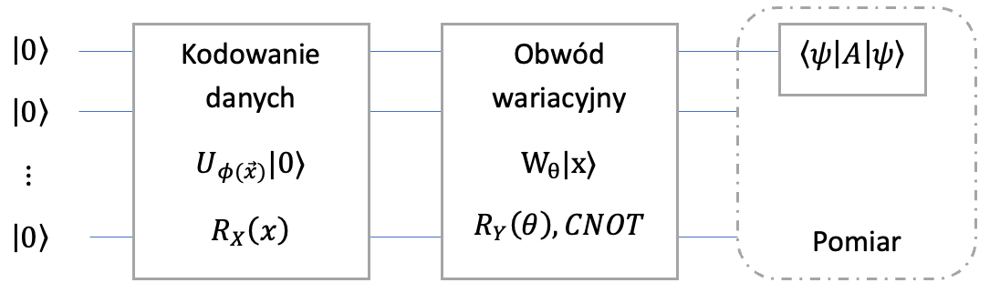
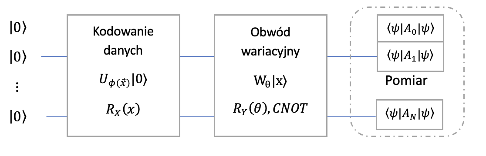

Algorytmy kwantowego uczenia maszynowego QML

\[ \newcommand{\bra}[1]{\left \langle #1 \right \rvert} \newcommand{\ket}[1]{\left \rvert #1 \right \rangle} \newcommand{\braket}[2]{\left \langle #1 \middle \rvert #2 \right \rangle} \]
Komputery kwantowe nie są jeszcze maszynami, które moglibyśmy wykorzystać do codziennych zadań. Dostępne komputery kwantowe pozwalają wykonywać algorytmy i obliczenia na około 100 kubitach. Nie posiadają one jednak mechanizmu korekcji błędów. Ponadto, bramki muszą działać znacznie szybciej niż ich czas dekoherencji, co uniemożliwia realizację długich sekwencji bramek dla złożonych algorytmów. Dlatego obecny etap rozwoju tych maszyn nazywany jest erą NISQ(ang. Noisy Intermediate-Scale Quantum)
Pomimo ograniczeń technologicznych, wciąż można wykazać tzw. kwantową supremację (czyli przewagę algorytmów kwantowych nad klasycznymi) w problemach optymalizacyjnych i w modelowaniu danych wykorzystując do tego celu parametryzowane obwody kwantowe (ang. Parameterized quantum circuits, PQCs), które z wykorzystaniem klasycznych optymalizatorów mogą być trenowane w celu znalezienia optymalnych wartości dla zadanej funkcji kosztu. Podejście takie nazywane jest uczeniem hybrydowym.
PQC realizowane są z wykorzystaniem bramek w postaci ustalonej (np. bramki CNOT). Wykorzystują one również bramki parametryzowane, co pozwala generować nietrywialne wyniki. Algorytmy przystosowane do realizacji na obecnych komputerach kwantowych nazywamy algorytmami NISQ.
Modele kwantowego uczenia maszynowego (ang. Quantum Machine Learning, QML) realizowane przez kwantowe algorytmy wariacyjne (ang. Variational Quantum Algorithms, VQA) reprezentują całą klasę algorytmów, które używają klasycznych optymalizatorów do znalezienia parametrów kwantowych obwodów. Szczególnymi realizacjami tak zdefiniowanych modeli są:
- Variational Quantum Eigensolver
- Variational Quantum Solvers
- Variational Quantum Classifier
- Quantum Support Vector Classification
- Quantum Neural Networks
- Quantum Autoencoder
- Quantum Approximate Optimization Algorithm
Postaramy się zdefiniować jakie problemy i modele możemy sformułować tak by nie wymagały one duzej liczby (zaszumionych) kubitów.
Cały obwód kwantowy moze być kontrolowany za pomocą parametrów realizowanych w bramkach. Mozna go traktować jako rózniczkowalną funkcję.
Automatyczne rózniczkowanie wykorzystywane jest w paradygmacie programowania Differentiable programming jak równiez w szeroko stosowanych sieciach neuronowych. Podejście to mozna wyrazic jako coś więcej niz sieci neuronowe. To paradygmat gdzie algorytmy nie są kodowane ale uczące się.
Parameterised Quantum Circuit jak ogólny model uczenia maszynowego
Wiemy juz jak składać bramki w celu utworzenia dowolnego (i o dowolnej głębokości) obwodu. \[ \ket{\psi'} = U_m(\theta_m)\dots U_2(\theta_2) U_1(\theta_1) \ket{\psi} \]
Część indywidualnych bramek (ze zbioru \((U_i)_{i=1,/dots,m}\)) moze być ustalona np. \(X\), \(CNOT\), czyli ich parametry są ściśle określone (np. \(\pi\)). Jednak część bramek moze zalezeć od parametrów obrotów wyrazonych najczęściej jako radiany (w zakresi \(\theta \in [-\pi, \pi]\)). Po przygotowaniu stanu \(\ket{\psi'}\) mozemy zmierzyć jeden lub cały zestaw kubitów. Po pomiarze kubity zostają w stanie bazowym zgodnie z wykorzystanym operatorem. Najczęściej wybieramy bazę obliczeniową pozwalającą uzyskać rezultat jako listę bitów.
Tak zdefiniowany i działający obwód kwantowy mozna wykorzystać do wielu rzeczy. Dla nas najwazniejszym aspektem jest mozliwość trenowania parametrów obwodu.

Quantum Neural Networks
PQC mozna wykorzystać do tworzenia modelu predykcyjnego - kwantowa sieć neuronowa jako klasyfikator. W tym przypadku dokonuje się pomiaru kilku a nawet jednego kubitu w celu weryfikacji wyniku. Stan początkowy powinien kodować próbkę danych do sklasyfikowania

Modele generatywne
W tym przypadku mozemy zbudować Quantum Circuit Born Machine gdzie dokonujemy pomiaru wszystkich kubitów w celu wygenerowania nowej próbki. Prawdopodobieństwo pojawienia się wartości otrzymanych z próbki zakodowane zostaje w stanie \(\ket{\psi'}\).
Kodowanie danych
Do zakodowania informacji klasyczne komputery używają bitów (które przyjąć mogą wartość 0 lub 1). Aktualnie używa się systemów, które kodują znaki w postaci 32 lub 64 bitowych sekwencjach. Pozwala to zakodować wszystkie znaki z kodowania ASCII bądź Unicode.
Preprocessing pozwalający załadować wektor danych \(x\) do parametrycznego obwodu kwantowego z wykorzystaniem tzw. feature mapy, czyli funkcji \(\psi(x)\). Funkcja ta wyrażana jest jako parametryzowany obwód kwantowy opisany przez operator \(U_{\psi(x)}\ket{0}\).
W tym miejscu warto zwrócić uwagę, iż procedura ta jest podobna do stosowania zanurzeń danych nieustrukturyzowanych w sieciach neuronowych (ang. embedding). Na przykład przetworzenie danych tekstowych z wykorzystaniem algorytmu Word2Vec. W fazie tej bardzo ważnym krokiem jest klasyczne przygotowanie danych poprzez takie elementy jak czyszczenie braków danych, standaryzacja czy też transformacje pozwalające otrzymać odpowiedni rozkład zmiennej.
Istnieje wiele różnych sposobów kodowania (ang. encode) lub zanurzenia (ang. embed) informacji w układ n-kubitów opisany przez stan kwantowy. Ponieważ chcemy użyć kwantowego komputera do uczenia się algorytmu na podstawie klasycznych danych musimy zdecydować w jaki sposób będziemy reprezentować wiersz danych a nawet cały zbiór danych w postaci stanu kwantowego.
Basis encoding
Jedną ze strategii jest tzw. kodowanie bazowe (ang. basis encoding), które polega na zamianie wektora danych wyrażonego w postaci bitowej na wektory bazowe kubitów (\(0\to \ket{0}\) i \(1\to \ket{1}\)). Chcąc jednak kodować dużo zmiennych i z dużą precyzją poszczególnych wartości będziemy zmuszeni do wykorzystania bardzo dużej ilości kubitów, co dla obecnych maszyn nie jest zbyt dobrym rozwiązaniem. Kodowanie to, tak samo jak w przypadku bitów, pozwala realizować zarówno liczby całkowite jak i rzeczywiste (dla z góry określonej precyzji).
Amplitude encoding
Układ n-kubitów może być reprezentowany jako superpozycja stanów bazowych. Pozwala to zakodować dane w amplitudach (ang. amplitude encoding). Normalizując wektor danych \(x=(x_1,\dots x_{2^k})\) , tak by \(\sum_k |x_k|^2 = 1\) możemy zakodować wszystkie \(x_k\) jako amplitudy. Na przykład \[x=(0.073,-0.438,0.730,0.000) \to \ket{x}=0.073\ket{00}-0.438 \ket{01} + 0.730 \ket{10} + 0\ket{11} \]
Więcej przykładów kwantowego embeddingu
Angle Encoding
Każdy kubit moze być opisany przez dwa kąty \(\theta\in [0,\pi]\) oraz \(\phi \in [0,2\pi]\). Każda wartość opisuje jeden punkt na sferze Blocha. Przetwarza ono zmienne na iloczyny i sumy funkcji cosinus i sinus. W kodowaniu tym istotne jest, aby podczas procesu skalowania zmiennych wyskalować je do wartości \((-1,1)\).
\[ |x⟩ = cos(x_i) \ket{0} + sin(x_i)\ket{1} \]
Schemat kodowania
Rozwazmy N wierszy 8 zmiennych \(X_1\dots X_8\) o wartościach rzeczywistych.
Potrzebujemy określić \(X_i^{max}\) oraz \(X_i^{min}\).
\(\theta^j_i = \frac{X^j_i - X_i^{min}}{X_i^{max}-X_i^{min}} \pi\)
Korzystając z bramki \(R_y\) mozemy zakodować kazdy kubit z osobnym kątem. Mozna takze wybrać dwie bramki z dwoma kątami dla jednego kubitu (\(R_y\) i \(R_z\))
Ansatz i schematy modelowe
Parametryzowany kwantowy obwód wariacyjny reprezentowany przez operator \(W_\theta\) zależny od wektora parametrów \(\theta\), który działa na wektor stanu przygotowany przez obwód kodujący dane \(W_\theta \ket{\phi}\), gdzie \(\ket{phi}\) przygotowaliśmy za pomocą kodowania danych. Ze względu na bardzo dużą ilość kombinacji bramek, które można łączyć równolegle i szeregowo trudno jest wskazać jeden konkretny obwód pozwalający realizować wszystkie problemy analityczne (nie ma darmowych obiadów). Wybór odbywa się najczęściej poprzez ustalenie różnych schematów i ich trenowania. Porównać można to do klasycznych sieci neuronowych, gdzie ilość warstw ukrytych, liczba neuronów w każdej warstwie czy funkcje aktywacji są tzw. hiper-parametrami, które ustala się przez doświadczenie. Wybrany schemat obwodów kwantowych określa się często mianem ansatzu.
Pomiar i interpretacja wyników
Na tym etapie najczęściej estymuje się zbiór wartości oczekiwanych $_{k=1}^K , przyjmujący wartości od -1 do 1.
W zależności od realizowanego procesu można wykonać pomiar jednego lub większej ilości kubitów. Można również generować wynik w postaci amplitud, prawdopodobieństw czy też wyniku w postaci binarnej. Etap ten często nazywany jest postprocesingiem danych.

Inny sposób pomiaru
